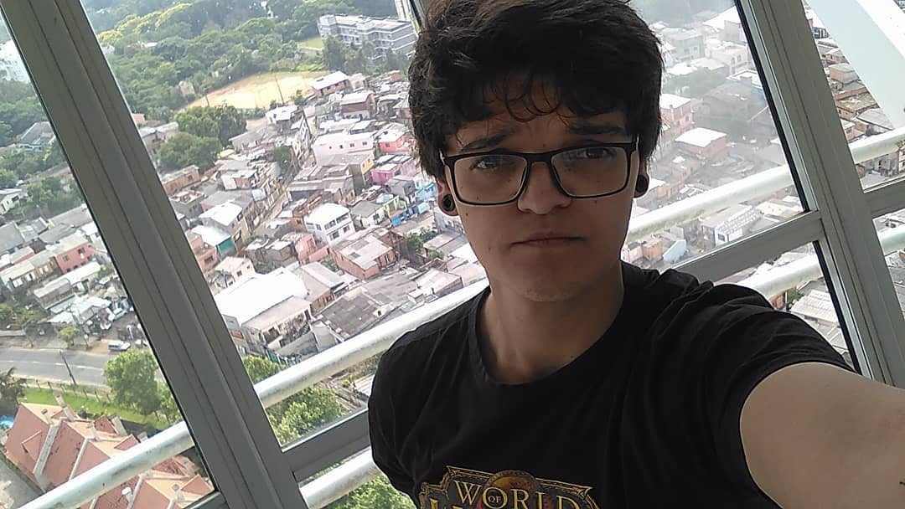

Projetista/Desenhista Freelance
Sou projetista em Telecomunicações com 8 anos de experiência diversificada em projetos de infraestrutura móvel e redes ópticas, buscando oportunidades para aplicar habilidades técnicas e conhecimento adquiridos em ambientes desafiadores e dinâmicos.
2023 - 2026
Descrição: Execução de Projetos/Relatórios em geral CLARO.
Competências principais: Excel, AutoCAD.
2020 - 2020
Descrição: Execução de Projetos/Relatórios Huawei (OI, TIM, CLARO), orientação ao técnico de campo referente às vistorias necessárias para execução dos projetos, suporte técnico na área de TI.
2018 - 2020
Descrição: Execução de Projetos/Relatórios de implantação Nokia DWDM, Nokia RF, Relatórios de Projetos Vivo, Relatórios de Instalação e Desinstalação de Equipamentos Claro em geral.
2018 - 2020
Descrição: Monitoramento das atividades de manutenção de rede óptica e metálica (setor 24 horas), baixas nas atividades realizadas em campo, cobrança das atividades executadas na plataforma (VIVO).
Nenhuma certificação cadastrada ainda — adicione aqui assim que concluir uma (ex: Cisco, CompTIA), com nome, instituição e link do badge.